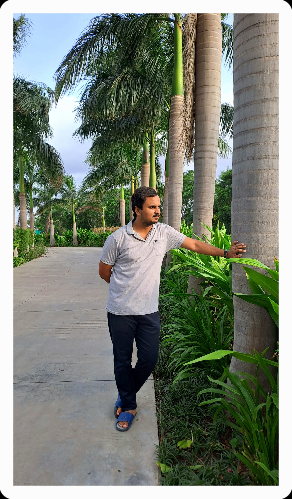

IT Professional | Web Developer | Java Developer

Hello! I am an IT professional with expertise in Web development and Java development. I have completed an MSc in IT and have hands-on experience in multiple projects, creating innovative solutions that solve real-world problems.
My passion lies in developing efficient, user-friendly applications and websites that deliver exceptional user experiences. I believe in continuous learning and staying updated with the latest technologies in the ever-evolving tech landscape.
Developed a fully responsive online store for electronic earphones and accessories with a modern user interface, shopping cart functionality, and secure checkout process.
A powerful Java-based application for advanced image processing with features including filters, transformations, and batch processing capabilities. Built using object-oriented principles and design patterns.
An advanced Python software that leverages libraries like OpenCV and PIL to provide sophisticated image processing tools. Features include facial recognition, image enhancement, and automated batch processing.
Download my latest resume to learn more about my experience, education, and qualifications.
Download Resume